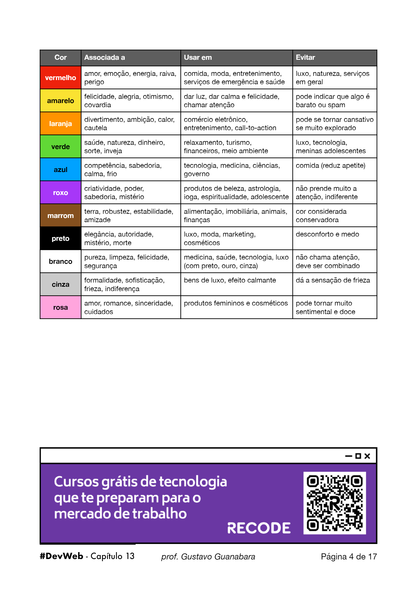

Teoria das Cores
Nesse módulo iremos aprender sobre teoria das cores, harmonia, etc.
É extremamente necessario escolher uma paleta de cor para um site.
O azul por exemplo, ele tem ligação como profissionalismo,segurança, inteligencia e etc, muito usado para empresas.
Vermelho normalmente é muito usando em sites de comida, de algo relacionado ao amor, raiva, entreterimento, mas não diz que nao devemos usar em outros casos, só temos que saber usar em determinados momentos
Amarelo reflete alegri e felicidade, usado tambem em sites de comida juntamente com o vermelho. O McDonalts, por exemplo.
No começo de nossos estudos de html e css, a maioria das pessoas tem o costume de deixar o fundo do site preto e com a fonte branca, mas esse deixar dessa forma pode ocasionar no cansaço da leitura... O recomendado para quando formos deixar o fundo e as letras dessa em textos seria deixar a letra preta com o fundo branco, que ajuda na leitura de textos grandes, mas podemos usar quando for algum tipo de informação com um mine texto.
Verde pouco utilizado, mas usado em sites de biodiversidade,saude, algo natural.
